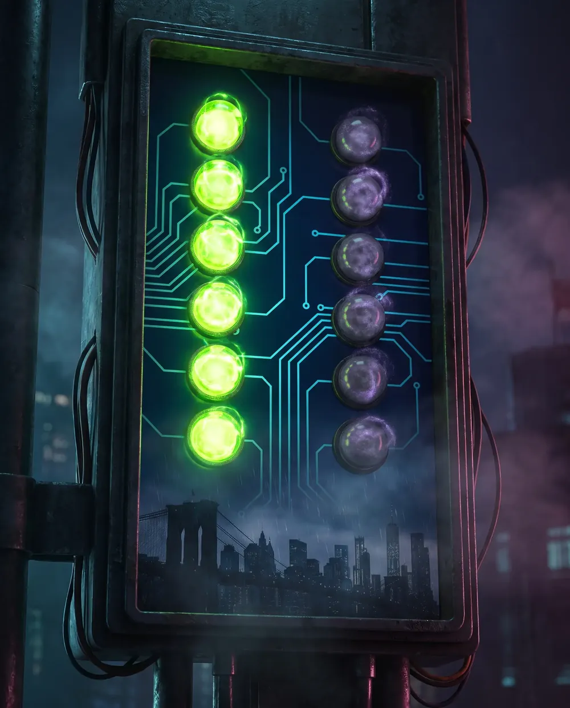

MRTA (Marijuana Regulation and Taxation Act)
The 2021 New York law that legalized adult-use cannabis for people 21 and older and created the regulatory framework.
You must be at least 21 years of age to view this site. Please verify your age to continue.
You must be 21 or older to enter this site.
Licensed by NY Office of Cannabis Management · Adult-Use Retail · 994 Atlantic Ave, Brooklyn, NY 11238 · Adults 21+ Only
Walk-in · Open daily10:00 AM – 10:00 PM
Browse the MenuField Notes / Legal
New York legalized recreational cannabis in 2021. This guide covers everything you need to know as an adult consumer: who can buy, how much, where you can use it, driving rules, employer and landlord rights, and how to verify a licensed dispensary.
In New York, adults 21 and older may possess up to 3 ounces of cannabis flower and 24 grams of concentrate outside the home, and may buy from dispensaries licensed by the Office of Cannabis Management (OCM). Consumption is allowed in private residences and licensed lounges — never in public, in a vehicle, or anywhere smoking is prohibited.
Take N' Toke is a licensed, walk-in OCM dispensary at 994 Atlantic Avenue in Brooklyn. You can browse the live menu online and shop in person — visit our Brooklyn dispensary daily from 10AM to 10PM.
| Rule | What the Law Says |
|---|---|
| Legal age | 21 years or older with a valid government-issued photo ID. No residency requirement; visitors qualify at the same limits. |
| Possession limit (flower) | Up to 3 ounces (about 85 g) of cannabis flower outside the home. |
| Possession limit (concentrate) | Up to 24 grams of cannabis concentrate outside the home. |
| Home storage | Up to 5 pounds of cannabis may be stored at a private residence. |
| Where consumption IS allowed | Private residences, licensed consumption lounges, and private property with the owner's permission. |
| Where consumption is NOT allowed | Sidewalks, streets, parks, vehicles, public transit, workplaces, schools, and anywhere tobacco smoking is banned. |
| Public-use rule | Cannabis follows the NY Clean Indoor Air Act — you may use it where tobacco smoking is permitted, but most public spaces prohibit both. |
| Driving | Driving while impaired by cannabis is a DWI. There is no per se THC limit; cannabis must travel in a sealed container, ideally the trunk. |
| Purchase tax | 13% retail tax on adult-use cannabis — 9% state excise plus 4% local — added at checkout. |
| Payment | Cash and debit accepted. Credit cards are not accepted at NY dispensaries due to federal banking rules. |
| Where to buy | Only from OCM-licensed dispensaries. Unlicensed shops are illegal and sell untested products. |
Take N' Toke at 994 Atlantic Avenue in Prospect Heights, Brooklyn is a licensed, walk-in OCM dispensary. Figures above reflect current New York State rules; confirm specifics with the OCM.
The 2021 New York law that legalized adult-use cannabis for people 21 and older and created the regulatory framework.
The New York State agency that licenses dispensaries, sets rules, and maintains the official dispensary verification tool.
Cannabis sold to any adult 21+ with valid ID — no medical card, certification, or residency required.
The maximum amount you may legally carry outside the home — 3 ounces of flower and 24 grams of concentrate in New York.
A potent extract such as wax, rosin, or distillate; counted separately from flower, with a 24-gram outside-the-home limit.
An OCM-licensed venue where on-site cannabis use is permitted — one of the few legal public consumption settings.
The statute under which cannabis-impaired driving is prosecuted; New York sets no per se THC blood limit.
A fixed measurable threshold (like 0.08 BAC for alcohol) that defines impairment. Cannabis has none in New York — officers rely on observed behavior.
On March 31, 2021, Governor Andrew Cuomo signed the Marijuana Regulation and Taxation Act (MRTA) into law, making New York the 15th state to legalize recreational cannabis for adults. The law created the Office of Cannabis Management (OCM) under the Cannabis Control Board to oversee licensing, regulation, and enforcement.
The MRTA was designed with social equity at its core, prioritizing license applications from communities disproportionately impacted by cannabis prohibition. The law also included automatic expungement provisions for people with prior marijuana convictions.
Licensed retail sales began in late 2022, with the market expanding steadily through 2023, 2024, and 2025. As of 2026, the licensed market continues to grow as more dispensaries receive approval to operate across the state.
Any adult 21 years of age or older with a valid photo ID can purchase cannabis from a licensed New York dispensary. There is no residency requirement.
You do not need to be a New York resident. Visitors from other states and countries may purchase cannabis at the same limits as residents. No medical card, prescription, or referral is required for recreational purchases.
New York law sets limits on how much cannabis an adult can purchase and possess at one time.
Cannabis may only be legally purchased from dispensaries licensed by the New York Office of Cannabis Management (OCM). Unlicensed shops are illegal, and their products have not been tested for safety.
Licensed dispensaries display their OCM license prominently. You can verify any dispensary's license status using the official OCM dispensary locator at the Office of Cannabis Management website.
Unlicensed shops selling cannabis remain a significant issue in New York City. These shops do not test their products, may sell contaminated or mislabeled items, and purchasing from them is not protected by consumer safety regulations.
If a shop does not have a visible OCM license, ask to see it. If they cannot produce one, leave.
This is one of the most commonly misunderstood aspects of the law. Legalization does not mean you can consume cannabis anywhere.
New York treats cannabis smoking and vaping like tobacco under the Clean Indoor Air Act: you may consume it in the limited places where tobacco smoking is allowed, but that excludes nearly all public spaces. In practice this means private residences and licensed consumption lounges are the realistic legal options. Edibles and tinctures are not “smoking,” but the same location restrictions on public consumption still apply.

New York's cannabis law includes protections for employees, but it does not eliminate all employer rights regarding cannabis use.
Landlords and property management companies have some authority over cannabis use on their properties.
Driving under the influence of cannabis is illegal in New York and carries serious consequences. There is no established “safe amount” of cannabis before driving.
Cannabis impairs reaction time, coordination, and judgment. If you have consumed cannabis, do not drive. Use public transit, a rideshare, or a designated driver.
New York operates both a medical cannabis program and an adult-use (recreational) market. They are separate but overlapping systems.
Requires registration with the state and a certification from a qualified healthcare provider. Medical patients may access higher potency products and may be exempt from certain taxes. The medical program has been operating since 2014.
Open to any adult 21+ with valid ID. No medical condition, certification, or registration required. Products are subject to standard potency limits and adult-use tax rates. This is what most consumers use.
The rules around traveling with cannabis are strict. What is legal within New York may be illegal the moment you cross a state line or enter an airport.
Every cannabis product sold at a licensed New York dispensary must pass rigorous lab testing before reaching the shelf. This is one of the strongest consumer protections in the legal market.
Unlicensed shops skip all of this testing. This is one of the most important reasons to only purchase from licensed dispensaries.
Before you buy from any dispensary, verify that they are properly licensed by the state.
If a shop is not in the OCM locator, it is not licensed. Products from unlicensed sources are not tested and may be unsafe.
While legalization removed many penalties, violations still carry consequences. Here is what remains enforceable.
Yes. New York legalized adult-use (recreational) cannabis on March 31, 2021 under the Marijuana Regulation and Taxation Act (MRTA). Adults 21 and older may purchase cannabis from dispensaries licensed by the New York Office of Cannabis Management (OCM). Buying from unlicensed shops remains illegal.
You must be 21 years of age or older with a valid government-issued photo ID. There is no residency requirement, so visitors from other states and countries may purchase at the same limits as New York residents. No medical card or prescription is required for adult-use purchases.
Adults 21 and older may possess up to 3 ounces of cannabis flower and up to 24 grams of concentrate outside the home. Up to 5 pounds may be stored at a private residence. Possessing amounts above these limits is a violation or misdemeanor depending on the quantity.
Adult-use cannabis carries a 13% retail tax: 9% state excise tax plus 4% local tax. This tax is added at checkout and is shown on your receipt. Tax rates are set by New York State and apply to adult-use purchases at licensed dispensaries.
Public cannabis smoking is broadly restricted in New York. Cannabis may not be consumed on sidewalks, in parks, in vehicles, on public transit, or anywhere tobacco smoking is prohibited. Legal consumption is limited to private residences, licensed consumption lounges, and private property with the owner's permission.
Adults 21 and older may possess up to 3 ounces of cannabis flower and up to 24 grams of concentrate outside the home, and up to 5 pounds may be stored at a private residence. Purchases must be made from an OCM-licensed dispensary.
Legal consumption is limited to private residences, OCM-licensed consumption lounges, and private property with the owner's permission. Cannabis follows tobacco smoking rules, so most public spaces are off-limits.
No. Public cannabis consumption is restricted in New York. It is not permitted on sidewalks, streets, parks, public transit, or inside any vehicle, and violations can carry a fine similar to public tobacco smoking.
No. There is no residency requirement. Visitors from other states and countries may purchase at the same limits as residents, with a valid government-issued photo ID showing they are 21 or older. No medical card is required.
Take N' Toke is a fully licensed New York dispensary. Every product on our shelves is lab-tested, properly packaged, and compliant with all OCM regulations. Shop with confidence.
Related